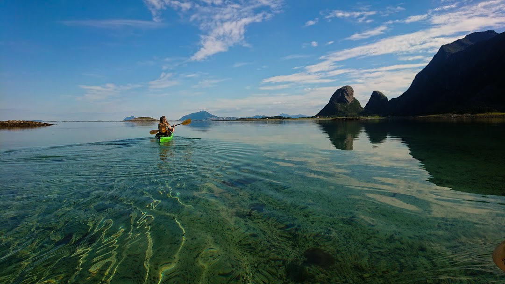

Selv om jobben på friluftsskolen bare er utendørs, var Solveig og jeg fast bestemte på at helgen mellom jobbukene skulle settes
av til tur. Vi bestemte ganske tidlig at dette skulle være en kajakktur rundt øya Tomma. Dette var en tur jeg hadde gjort tidligere.
Fra Nesna til Tomma er det en fergetur på rundt 50 minutter. På fergeturen møtte vi en elev vi hadde på friluftsskolen som ble veldig
glad av å se oss. Det var hyggelig, og en koselig start på turen. Fra fergeleiet til planlagt leirplass var det omlag 12 km. Vi padlet
i litt over to timer på et tilnærmet blikkstille vann til Lamholmen. Her slo vi opp teltet og lagde kveldsmat. En veldig fin dag.
Dagen etter våknet vi til skyfri himmel, noe værmeldingen forutså. Det værmeldingen også sa, var at det skulle blåse opp fra ettermiddagen
og etter hvert komme med kraftige regnbyger. Til tross for dette, bestemte vi oss for å padle videre til “sydenstranda”. Dette var en tur
på 6 km en vei, og vi (jeg) tenkte vi skulle være tilbake til teltet i god tid før uværet kom. Her tok vi temmelig feil. Vinden kom et par
timer tidligere og det ble dermed 4 blytunge kilometer med vinden rett imot tilbake til leirplass. Bølgene ble også uhyggelige store den
siste kilometeren. Etter å ha studert værradar og yr for resten av dagen, bestemte vi oss for å pakke sammen utstyret og padle videre mot
fergeleiet med en gang. Været kom fra vest, slik at vi kunne se det nærme seg. Etter å ha padlet en stund videre så vi at Dønnamannen
forsvant i skyene. Vi bestemte oss da for å padle mot land for å sette opp teltet, og ikke mange sekunder etter at teltet var rigget åpnet
himmelen seg. Det bøttet ned, vinden ble kraftigere og ute på fjorden så vi bølgene gå hvite. Glad vi ikke var i kajakkene da. Nå var det
bare å ligge i teltet til været ble bra, eller rettere sagt, minst ille. Vi skulle kose oss med en gryterett til middag, denne kosen ble
noe redusert da vi glemte kjøttdeig og måtte ta ekstra ris i stedet...
Minst ille var været i “gryåtten” søndag. Vi måtte ha alarmen på 0400 for å pakke sammen og padle de siste 8 km til fergeleiet. Været var
ikke så ille, så padlingen gikk fint. I Stedet for å padle rundt Alsøya som vi gjorde på fredag, padlet vi inn Alsøyvågen på søndag. Her var
havet blikkstille, men vi måtte til gjengjeld bære kajakkene et lite stykke til fergeleiet. Vi rakk den første fergen fra Tomma, og var tilbake
på Nesna klokken 0900.
Alt i alt var det en fin tur, selv om jeg i ettertid angrer på valget vi tok på Lamholmen. Kunne jeg valgt igjen ville det vært bedre å padle
rundt holmene ved Tomsvika, og tilbake til fergeleiet mot ettermiddagen.
